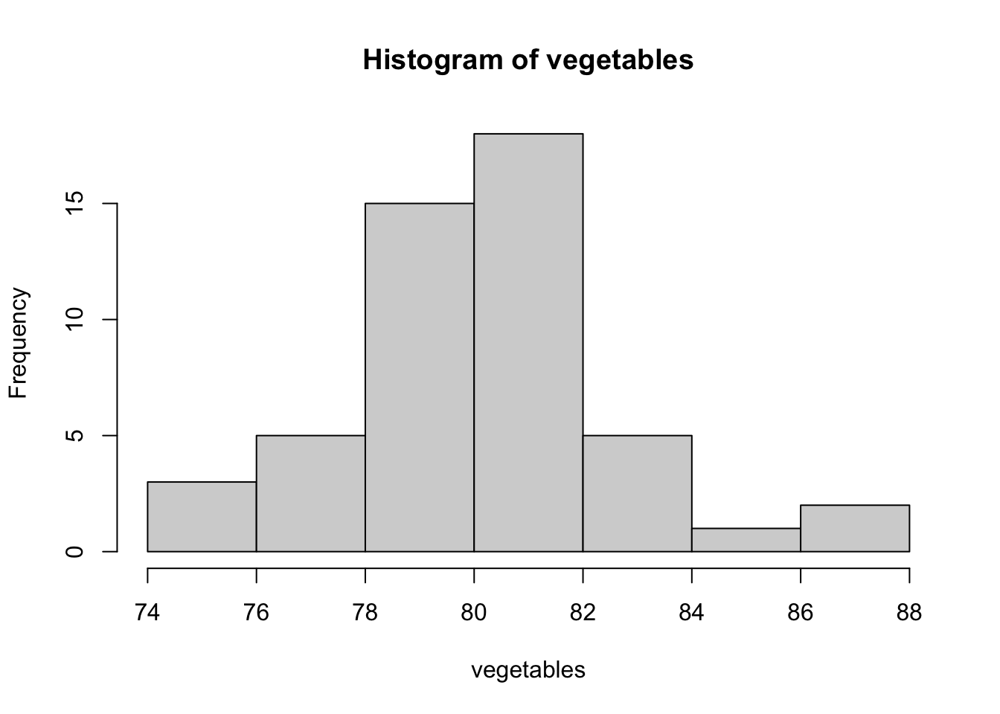
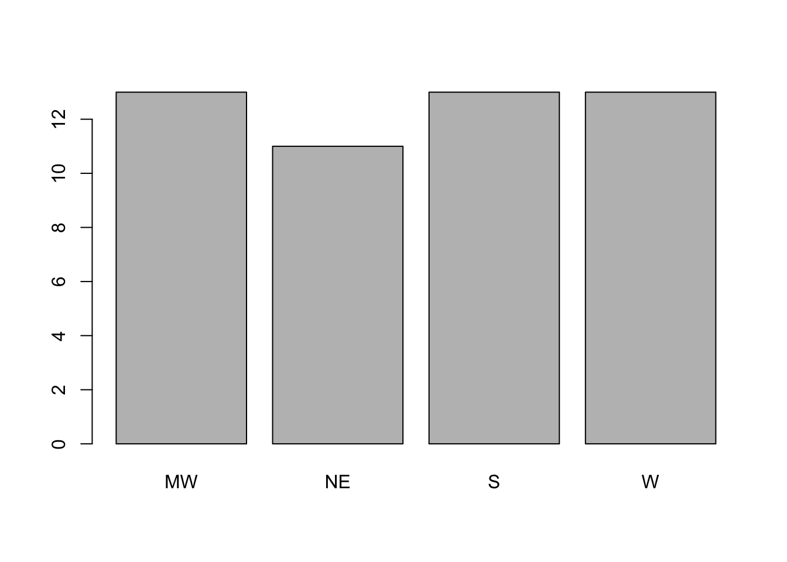

length(vegetables)[1] 50How can we start exploring a variable?
By the end of this lesson, you should be able to:
Download the companion R guide for this lesson
In the first four lessons, you learned how R stores data, how to create vectors, how to select observations, and how to work with missing values.
Now we’re ready to ask an important question:
What does this variable look like?
This process is called exploratory data analysis (EDA).
Rather than jumping directly into formal analyses, we first try to understand our data by calculating simple summaries and creating simple graphs.
Suppose we’re interested in the percentage of adults who report eating vegetables every day. This is recorded in the vegetables vector.
What can we say about the distribution of vegetable eaters? Let’s start with some basic explorations.
How many observations do we have?
length(vegetables)[1] 50OK good, we have one value for each of the 50 states. But wait…
Is there any missing data?
sum(is.na(vegetables))[1] 1Who didn’t report their data?
states[is.na(vegetables)][1] "Florida"Sigh. Oh Florida.
Well, at least Florida is the only state missing. Let’s keep going.
What is a typical value?
mean(vegetables)[1] NAmedian(vegetables)[1] NAOops! Forgot to account for the missing values. Thankfully we checked earlier and saw there was only one missing value. Let’s have R ignore that missing value.
mean(vegetables, na.rm = TRUE)[1] 80.2551median(vegetables, na.rm = TRUE)[1] 80.3Looks like around 80% of people in each state tend to report eating vegetables each day. Are you surprised by this, or does it seem reasonable to you?
What are the smallest and largest values?
min(vegetables, na.rm = TRUE)[1] 74.4max(vegetables, na.rm = TRUE)[1] 86.9Not as much variation as we might have expected here… Interesting.
Simple summary statistics answer specific questions about a variable, but no single number tells the whole story.
A histogram helps us understand the overall shape of the data.
hist(vegetables)
As you look at the histogram, ask:
Suppose we want to understand the distribution of states across regions. As we saw earlier, this is a categorical variable, which R stores as text (character) data.
typeof(regions)[1] "character"We could print the entire regions vector, but let’s start by figuring out just how many categories there are. What are the options for region in this data set?
unique(regions)[1] "S" "W" "NE" "MW"Interesting. Many Official government data sets use more regions than this (around 9) to help account for geographic variability. With only 4 regions, I wonder how many states are in each region?
table(regions)regions
MW NE S W
13 11 13 13 Seems pretty balanced among the regions, with a couple fewer states in the Northeast. What’s the percent breakdown of states in each region?
table(regions) / length(regions)regions
MW NE S W
0.26 0.22 0.26 0.26 So around 22% - 26% of states are classified in each of the four regions.
This distribution is fairly equal across the categories, but it’s still a good idea to visualize it with a graph:
barplot(table(regions))
Ask yourself:
Choose summaries that match the type of variable.
Open the companion R guide and explore the physical variable.
Remember to account for the missing values you learned about in the previous lesson.
Suppose we now ask:
Does vegetable consumption differ by region?
We know how to summarize vegetables.
We know how to summarize region.
But how do we summarize vegetables separately for each region, or create one histogram for each region?
Those questions are much harder to answer using only the base R tools we’ve learned so far.
In the next module, we’ll begin using the tidyverse and ggplot2.
These tools make it much easier to summarize data, compare groups, and create attractive graphics.
| Function | Purpose |
|---|---|
length() |
Count observations |
mean() |
Calculate the mean |
median() |
Calculate the median |
min() |
Smallest value |
max() |
Largest value |
hist() |
Create a histogram |
unique() |
Identify categories |
table() |
Count categories |
barplot() |
Create a bar plot |